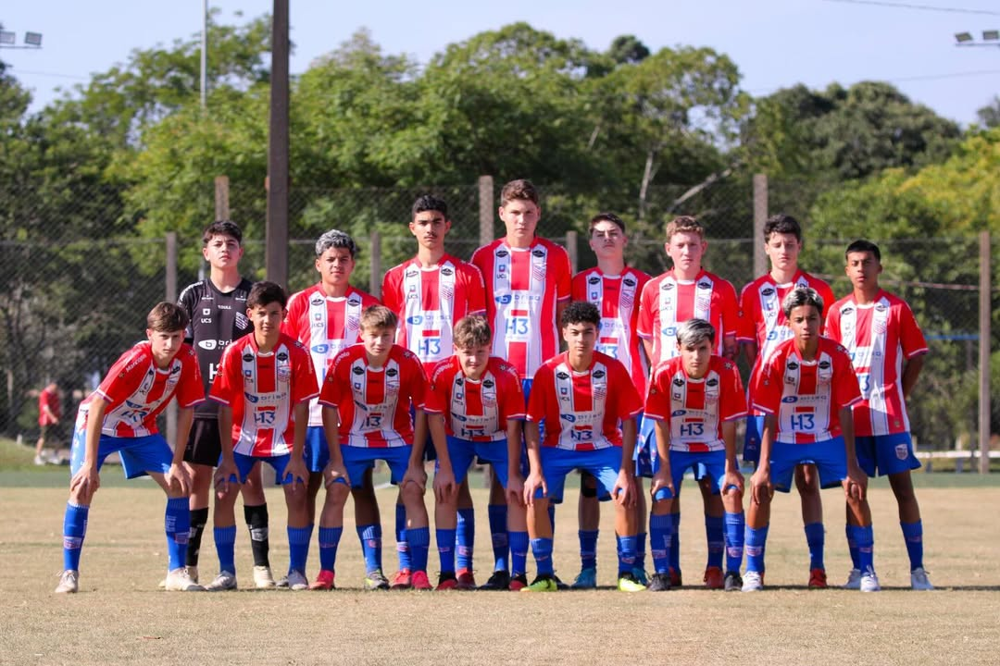
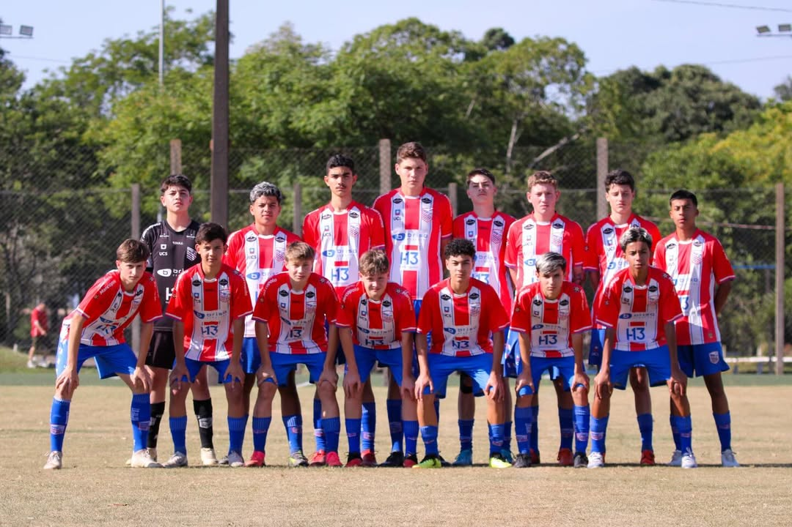

Bem-vindo à Apafut
Caxias do Sul
Referência na formação de atletas na cidade de Caxias do Sul/RS.
Saiba Mais
Referência na formação de atletas na cidade de Caxias do Sul/RS.
Saiba Mais
A Apafut é uma academia de futebol dedicada a formar atletas de alta performance, promovendo o desenvolvimento técnico, tático e físico dos jogadores. Com uma equipe de treinadores experientes e uma infraestrutura moderna, oferecemos um ambiente ideal para o crescimento esportivo.
Saiba mais
 

Iniciação esportiva com foco em diversão e desenvolvimento motor básico.
Desenvolvimento de habilidades técnicas fundamentais e coordenação motora.
Aprimoramento técnico e introdução a conceitos táticos básicos.
Formação tática avançada e preparação física específica para o futebol.
Preparação para o futebol profissional com treinos de alta performance.
Transição para o profissionalismo com foco em competições de alto nível.
Atacante
Meio-Campo
Zagueiro
Goleiro
Volante
Ponta

Lateral
Centroavante

Principal competição estadual do Rio Grande do Sul
Torneio oficial da Federação Gaúcha de Futebol
Torneio municipal com times da cidade
"A Apafut tem sido fundamental no desenvolvimento do meu filho. A equipe é dedicada e o ambiente é muito positivo."
"Desde que meu filho começou na Apafut, ele melhorou muito tecnicamente e ganhou muita confiança em campo."
"A estrutura e o profissionalismo da Apafut são excepcionais. Recomendo a todos os pais que querem o melhor para seus filhos."
"Meu filho adora treinar na Apafut. Ele está sempre motivado e feliz, o que é o mais importante para nós."
"Os treinadores são muito atenciosos e realmente se importam com o desenvolvimento dos atletas. Excelente academia!"
"O ambiente de treinamento na Apafut é muito positivo e estimulante. Os atletas se divertem e aprendem muito."
Invista no futuro do seu atleta com nossos planos completos
Fique por dentro de tudo que acontece na Apafut


Em uma final emocionante, o time Sub-17 da Apafut sagrou-se campeão regional após vencer nos pênaltis. A equipe mostrou garra e determinação durante toda a competição.
Ler mais
Estão abertas as inscrições para as peneiras da Apafut. Jovens talentos de 8 a 17 anos podem se inscrever e fazer parte do nosso time. Vagas limitadas!
Ler mais
A Apafut inaugura mais um campo de treino com grama sintética de última geração. O investimento visa proporcionar ainda mais qualidade na preparação dos atletas.
Ler mais